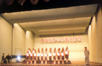
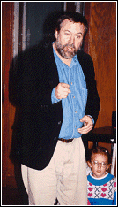
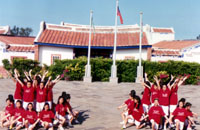

- research -
The Center for Visual Science is affiliated with a number of collaborative research efforts both within and outside the university. . Boynton to bring together scientists from a variety of disciplines with the common goal of pursuing excellence in vision research. Our investigators employ an equally diverse set of approaches, from molecular genetics and cellular biology to neurophysiology and psychophysics. We invite you to learn more about the laboratories, people and facilities that make CVS a vibrant and exciting scientific community.
|  |
in chemistry from the University of California, Santa Barbara, in 1968. Rossiter joined the National Institute of Standards and Technology in 1969 as a member of the Organic Chemistry Section. From 1970 until the present, he has been a member of the Building Materials Division of the Building and Fire Research Laboratory. As an organic chemist, his research interests center around the performance and service-life prediction of organic building materials, particularly in the areas of roofing and thermal insulation. In addition, he has participated in projects involving lead paint and the performance of materials in solar collector systems.
|  |
It looks like they have plans for plenty of content but not much was there as of November 3, 1999. Becker - Originally published in Visual Sociology 10 (1-2), 5-14. It features out-of-print and unpublished materials useful for teaching and research. Jon Prosser Image-based research essays and a photo essay demonstrating same. Journal of Visual Literacy Calls for papers, submission guidlines, table of contents and abstracts.
It covers architectural and language models of parallelism. The emphasis is learning to write parallel programs. Emphasis is on examining state of the art research and individual research projects. The goal of this project is to interest and support young women in Computer Science, 1995. .
|  |
another research site: http://www.cs.rochester.edu/research/brain/vrlab/vrlab.html
.